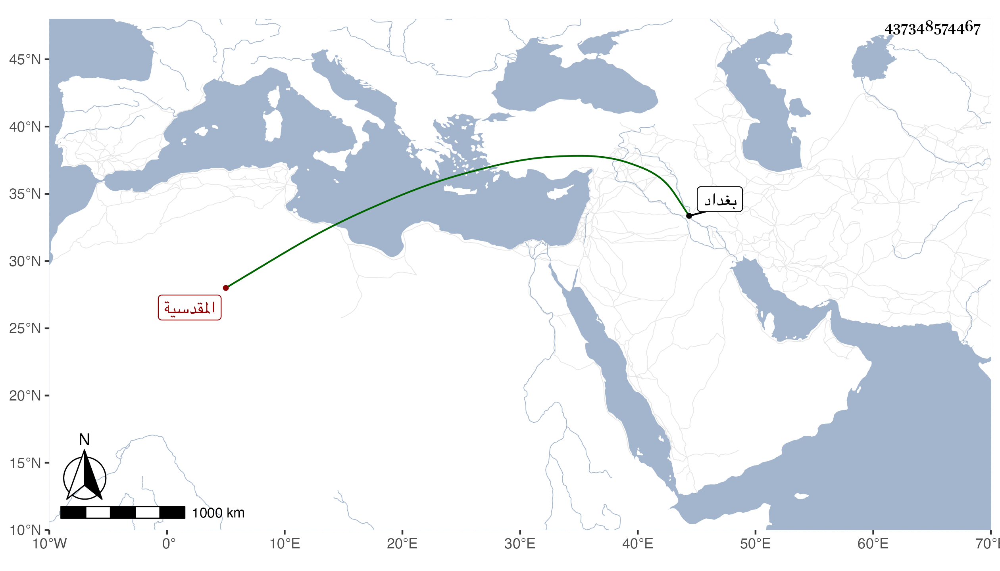

0902Sakhawi.DawLamic.ITO20230111-ara1.EIS1600.437348574467
Biography ID: 437348574467
543
فاطمة ابنة الشهاب أبي محمود أحمد بن محمد بن إبراهيم بن هلال بن تميم بن سرور المقدسية أخت إبراهيم الماضية ، ولدت سنة ستين وسبعمائة وأحضرت على البياني والبرهان إبراهيم بن عبد الرحمن بن جماعة جزء أبي بكر بن خزيمة وعلى أولهما فقط جزء ابن زبان والمستجاد من تاريخ بغداد وحديث النابغة من مشيخة الفخر وغيرها ، وأجاز لها ابن الخباز ، وحدثت سمع منها ابن موسى والابى في سنة خمس عشرة وذكرها شيخنا في معجمه .
